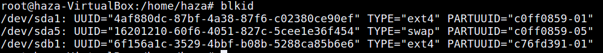
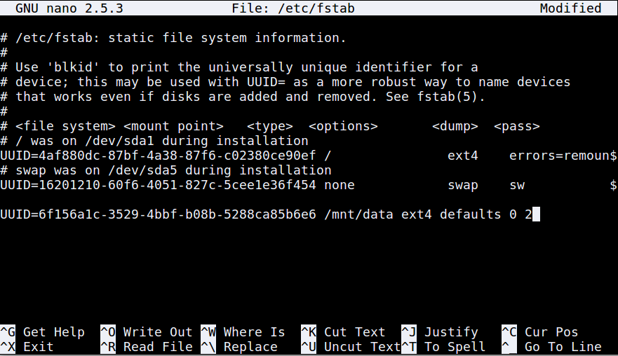

Pengertian Mount :
Mount adalah sebuah proses software yang mengaktifkan disk tersebut sehingga folder dan file di dalam disk dapat dibaca oleh sistem komputer. Jika sebuah hard drive terhubung secara fisik dengan port sistem komputer, tetapi tidak di-mount, maka sistem komputer tetap tidak mengenali perangkat yang terhubung itu.
Perintah mount ini, termasuk perintah yang sering digunakan di Linux. Perintah ini digunakan untuk menempelkan atau mentautkan media (hardisk, flashdisk, MMC, MicroSD, dll) ke dalam directory yang kita inginkan. Dengan munculnya kernel Linux yang terbaru saat ini, untuk membaca media-media penyimpanan cukup mudah dan rata-rata plug and play jadi cukup ditancapkan saja. Media-media tersebut langsung dikenali atau langsung terbaca. Berbeda dengan kernel Linux yang lama, untuk membaca media seperti Flashdisk, harus compile kernel.
Tutorial menggunakan Mount secara otomatis :
Mengetahui UUID partisi kita terlebih dahulu dan memastikan apakah jenis partisi kita sudah ext4 atau belum :
$ sudo blkid
Mengubah jenis partisi menjadi ext4 :
$ sudo mkfs -t ext4 /dev/sdb1
Jika partisi kalian belum diubah menjadi ext4 maka kalian harus merubahnya menjadi ext4 dengan command diatas dan yang /dev/sdb1 itu harus mengarah ke partisi kalian.
Menambahkan UUID di /etc/fstab :
setelah kita mengetahui ID partisi kita dari blkid maka kalian copy ID itu lalu ikuti perintah berikut :
$ sudo nano /etc/fstab
Mengecek partisi dan untuk mengetahui apakah sudah berjalan ataupun belum :
$ sudo reboot
Jika kalian mengalami error pada saat reboot,maka kalian hanya perlu mengetik kata sandi root anda dan setelah itu kalian harus memeriksanya kembali nano /etc/fstab anda.
Jika kalian sudah merubahnya kalian hanya perlu reboot kembali dan pastinya akan masuk kehalaman dekstop anda.
Perbedaan yang sebelum dimount otomatis dan sudah :
Semoga berhasil mencoba kawan.jika terjadi error atau hal lain maka bisa chat dengan admin lewat medsos dibawah.